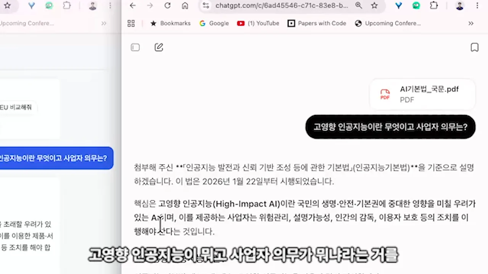
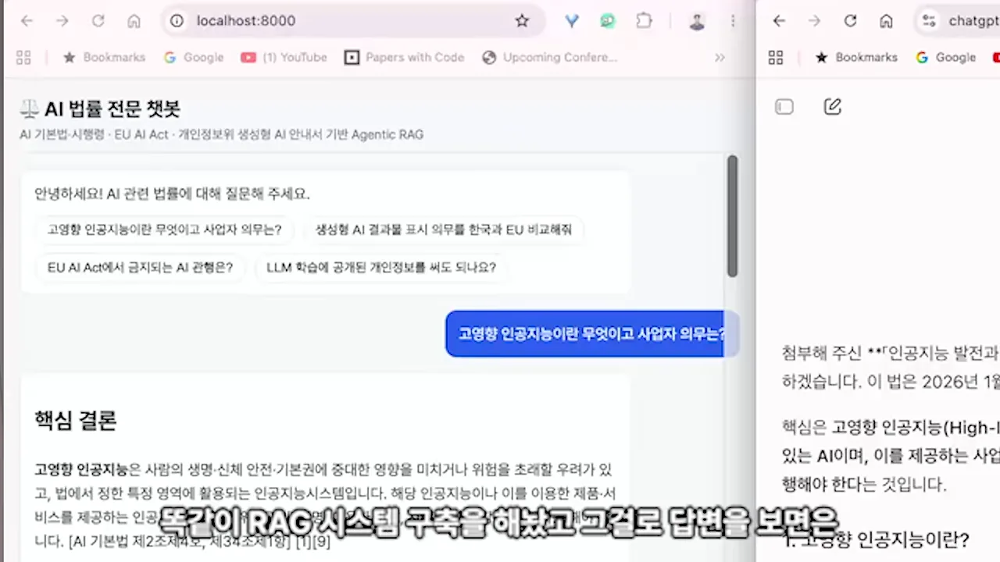
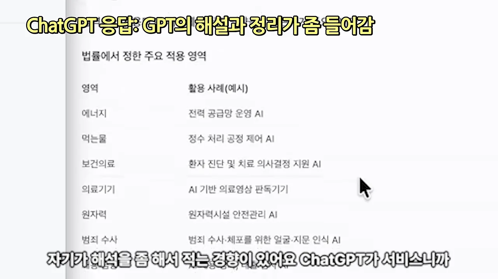
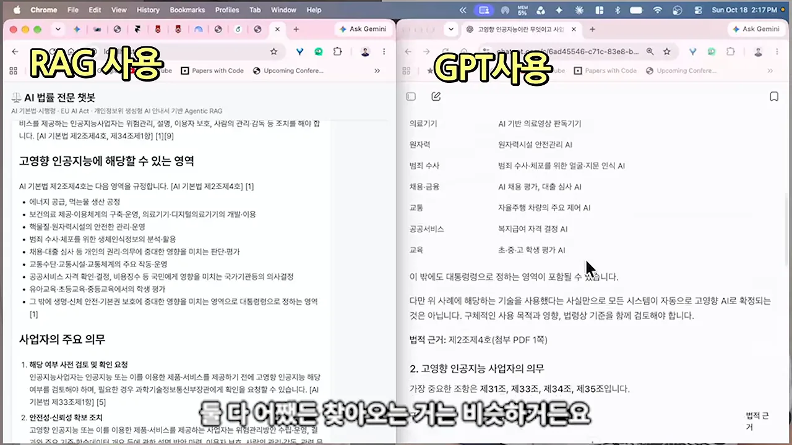
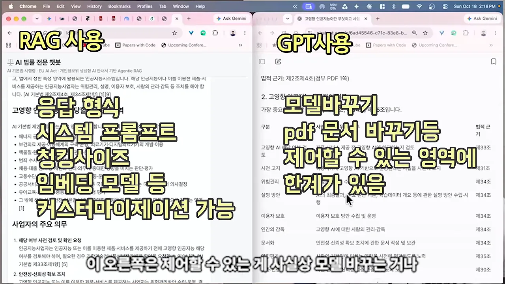

GPT에 PDF 올리기와 RAG는 뭐가 달라요?
진행자의 첫 질문은 단순해요. GPT(Generative Pre-trained Transformer)에 PDF(Portable Document Format)를 던져 주고 물어보는 것과 RAG 시스템을 만들어 쓰는 것이 솔직히 뭐가 다르냐는 거예요.
용담 님은 먼저 RAG가 왜 필요한지부터 짚어요. LLM은 할루시네이션이 생겨요. 원하는 답을 받으려면 관련 정보를 찾아서 같이 넘겨 주는 게 좋은데, 특정 법률이나 사내 규정은 LLM이 알고 있을 리가 없어요. 그래서 자료를 주고 '이걸 참고해서 답해 줘'라고 하는 구조를 만들어요. 용담 님은 이걸 오픈북 시험에 비유해요.
아래 그림은 그 흐름이에요. 질문이 들어오면 먼저 사내 문서에서 관련 부분을 찾고, 찾은 내용을 질문과 함께 LLM에 넘겨요. 점선은 직접 만든 RAG에서 손댈 수 있는 지점이에요.
그래도 직접 만드는 이유
용담 님은 GPT에 PDF를 올리는 것도 크게 보면 RAG의 한 종류라고 해요. 그래도 회사가 RAG를 직접 만드는 이유는 두 가지예요.
| GPT에 PDF 올리기 | 직접 만든 RAG | |
|---|---|---|
| 쓸 수 있는 환경 | 외부 서비스를 써도 되는 곳 | 보안 때문에 외부를 못 쓰는 회사도 가능 |
| 검색과 답변 | GPT가 알아서 찾고 알아서 답해요 | 로직을 직접 만들어서 단계마다 조절해요 |
| 성능 | GPT가 정한 만큼 | 검색·생성을 고치고 튜닝하면 더 좋아질 수 있어요 |
실제 기업에서도 많이 쓰냐는 질문에는 '엄청 많이'라고 답해요. RAG라는 말이 처음 유행한 게 2023~2024년쯤인데, 그때부터 거의 모든 회사가 RAG 시스템을 만들고 운영하면서 계속 넓혀 가고 있다고 해요.
RAG와 파인튜닝, 기업은 뭘 쓰나요?
두 번째 질문은 RAG와 파인튜닝의 차이예요. 용담 님은 한 단어로 갈라요. 파라미터를 바꾸느냐예요. 모델은 파라미터로 계산해서 답을 내요. RAG는 파라미터를 그대로 두고, 답을 만들 때 자료를 컨텍스트로 읽게 해요. 파인튜닝은 파라미터 자체를 업데이트해요.
면접으로 비유하면
용담 님은 온라인 면접 상황에 빗대요. 면접관이 질문했을 때 답하는 방식을 세 가지로 나눠요. 그림의 가운데 칸이 RAG, 오른쪽 칸이 파인튜닝이에요.
(b)처럼 처음 보는 자료를 읽으며 답하면 내용을 잘 모르니 말이 어색하게 나올 수 있어요. 말투를 다듬고 싶다면 그 자료를 여러 번 읽어서 거기서 쓰는 표현을 익히면 돼요. 기술적으로는 모델이 글의 흐름을 학습해서 다음 토큰이 더 자연스럽게 이어지게 되는 거예요. 이게 파인튜닝이에요.
기업은 무엇을 고를까요
처음에는 RAG를 더 선호했어요. 파인튜닝은 GPU(Graphics Processing Unit)가 많이 필요하고 학습 데이터도 직접 만들어야 해서 돈이 많이 들고 어렵거든요. 그런데 보안 때문에 외부 LLM을 못 쓰는 환경이 문제였어요. 이런 회사는 자체 모델을 써야 하는데, 작은 SLM(Small Language Model)은 성능이 부족해요. 그래서 파인튜닝으로 성능을 끌어올리고, 모델이 작으니 필요한 컨텍스트를 주려고 RAG도 붙였어요. 결국 둘 다 써요.
| RAG | 파인튜닝 | |
|---|---|---|
| 파라미터 | 그대로 둬요 | 업데이트해요 |
| 하는 일 | 답할 때 자료를 읽게 해요 | 자료의 흐름과 표현을 모델이 익혀요 |
| 비용 | 상대적으로 적어요 | GPU와 학습 데이터가 필요해서 비싸요 |
| 쓰는 경우 | 외부 LLM에도, 자체 모델에도 붙여요 | 자체 모델(SLM)의 성능을 올릴 때 |
외부 LLM을 쓸 수 있는 회사도 RAG는 붙여요. 용담 님은 외부 LLM은 파인튜닝이 안 되니 어쩔 수 없이 RAG를 붙인다고 설명해요. 정말 제대로 만들고 싶다면 파인튜닝도 하고 RAG도 붙인다는 게 결론이에요.
래그일까요, 라그일까요
진행자가 갑자기 발음을 물어요. 용담 님은 원래 '래그'라고 읽었는데 헷갈려서 그냥 'R-A-G'라고 읽는대요. 요즘은 LLM으로 답해야 하는 챗봇이나 에이전트 시스템에는 거의 다 RAG를 붙인다고 해요.
사내 HR 에이전트가 막힌 곳
RAG를 잘 만든 사례가 있냐는 질문에 용담 님은 방향을 살짝 틀어요. 잘 만든 곳은 많지만, 기업들이 RAG를 만든 지 길어야 2년쯤이라 만들어 놓고 고도화에서 막힌 경우가 더 많다고 해요.
예로 든 건 한 대기업의 HR(Human Resources) 전용 에이전트예요. 사내 규정을 일일이 찾기 어려우니 다 모아서 에이전트로 만들자는 프로젝트를 전사 레벨로 진행했어요. 문서는 다 있으니 될 거라고 생각했는데, 막힌 곳은 기술이 아니었어요. 아래 그림이 영상에서 나온 세 가지 문제예요.
세 가지 문제
권한. 인턴이 입사해서 HR 에이전트에게 부사장급 연봉을 물어봐요. 정보에 권한이 나뉘어 있지 않으면 바로 찾아서 답해 버려요. 예전에는 문서별로 접근이 나뉘어 있었고, HR 부서에 물으면 거기서 알아서 걸렀어요. 에이전트로 만들면 이런 정책을 전부 따로 관리해야 해요. 그리고 이 규칙은 RAG나 에이전트가 정하는 게 아니라 사람이 정해 놔야 해요.
우회 시도. 그러면 안 되지만, 물어보면 안 되는 것을 자꾸 뚫어서 알아내려는 사람이 생겨요.
HR 문의 증가. HR팀 입장에서 챗봇이 잘 쓰이면 업무가 줄 것 같아요. 그런데 답이 100% 잘 나오진 않으니, '에이전트에 물어봤는데 답이 이상한데 확인해 줄 수 있냐'는 질문이 다시 와요. 업무가 줄기는커녕 늘어서, HR 쪽이 대응을 열심히 안 해 주기도 해요.
용담 님은 이런 이해관계 문제가 기술 문제보다 오히려 많다고 해요. 진행자는 데이터가 준비돼 있다고 해도 그게 곧 'AI를 위한 데이터 준비'는 아니라고 정리해요. 기존 데이터를 AI(Artificial Intelligence)가 쓸 수 있게 바꾸는 작업까지 RAG 프로젝트에 들어 있다는 거예요.
서비스 레벨에서 고민할 게 많다는 뜻이에요. 이런 걸 잘하는 인재는 거의 없다고 해요. 직접 해 봐야 알 수 있는 일이라서요.
에이전틱 RAG는 무엇을 대신하나요?
에이전틱 RAG를 설명하려면 먼저 '에이전트'라는 말부터 봐야 한다고 해요. 에이전트에는 대행이라는 뜻이 들어 있어요. 스포츠 에이전시가 선수의 일을 대신해 주듯, RAG 앞에 에이전트가 붙으면 뭔가를 대신해 준다는 뜻이에요.
그럼 무엇을 대신할까요? 질문에 따라 찾아봐야 할 데이터 소스가 여러 개인 상황을 생각해 봐요. 아래 그림의 (a)가 예전 방식, (b)가 에이전틱 RAG예요.
예전에는 개발자가 규칙을 정해 놨어요. 어떤 키워드가 들어오면 1번 소스, 다른 키워드면 2번 소스로 보내는 라우팅이에요. 그런데 경우의 수가 너무 많아서 키워드를 다 지정할 수 없어요. LLM이 똑똑해지자 이 판단을 LLM에게 시켜 보자는 생각이 나왔어요. 질문이 들어오면 여러 소스 중 어디를 찾아서 답하면 좋을지를 LLM이 정하고, 그 뒤는 기존 파이프라인을 그대로 따라가요.
꼭 갈아타야 할까요
이미 RAG를 만든 회사도 에이전틱 RAG로 옮겨야 하냐는 질문에, 용담 님은 장단점을 같이 말해요.
- 좋은 점: API 비용 대비 효율이 확실히 있고, 판단을 LLM에게 맡기니 만들기가 훨씬 편해요.
- 고민할 점: 앞에서 나온 질문, 즉 '통제가 되느냐'예요. LLM이 잘하면 상관없지만, 잘못 고를 때 어떻게 할지가 문제예요.
꼭 필요한 게 아니면 안 써도 되지만, 넣었더니 크게 좋아지는 경우가 많아서 개인적으로는 써 보길 권한다고 해요.
LLM 위키는 RAG와 뭐가 달라요?
진행자가 요즘 귀를 간지럽히는 게 'LLM 위키'라고 꺼내요. 용담 님은 업계의 유명 인사 안드레 카파시(Andrej Karpathy)가 공개한 마크다운 파일에서 시작한 개념이라고 소개해요. 오픈AI 공동 창업자로 알려진 사람이에요. 용담 님은 지인의 결혼식에서 카파시를 실제로 만나 '빅 팬'이라고 인사하고 사진을 찍었다는 일화도 들려줘요.
왜 나왔을까요
LLM 성능이 좋아지자 사람들은 '내 데이터'로 무언가를 만들고 싶어 했어요. 내 데이터를 LLM이 잘 이해하게 하려고 RAG도 나왔죠. 그런데 RAG는 너무 어렵고 복잡해요. 그래서 LLM이 지식을 알아서 관리하게 할 수는 없을까 하는 생각에서 LLM 위키가 나왔다고 해요.
방법은 간단해요. 카파시가 공개한 마크다운 파일을 받아서, 내가 가진 텍스트 파일에 대고 '이 방식으로 만들어 줘'라고 하면 돼요. LLM이 위키백과처럼 문서끼리 서로 연결된 형태로 내 데이터를 정리해 줘요. 그렇게 나만의 지식 베이스가 생기면, LLM이 마치 나에 대해 다 아는 것처럼 답해 줘서 유행이 됐어요.
RAG와는 시스템이 달라요
용담 님은 LLM 위키도 크게 보면 RAG의 일부라고 봐요. 하는 일은 비슷하고, 차이는 시스템에 있어요. 아래 그림의 왼쪽이 LLM 위키, 오른쪽이 보통의 RAG예요.
| LLM 위키 | RAG | |
|---|---|---|
| 저장 | 텍스트를 정리만 해 둬요. DB가 없어요 | 보통 벡터 DB에 정리해요 |
| 찾는 방법 | LLM이 필요할 때마다 소스를 찾아 쭉 읽어요 | 검색으로 관련 부분을 골라요 |
| 부담 | LLM이 읽어야 할 컨텍스트가 많아요 | 시스템을 만들기 어렵고 복잡해요 |
| 맞는 규모 | 개인의 지식 베이스 | 대규모 |
용담 님은 LLM 위키 문서에 '문서가 10만 개쯤 넘어가면 위키 말고 RAG를 하라'고 적혀 있다고 해요. 무조건은 아니지만 나름의 기준선이고, 애초에 대규모용이 아니라 개인이 쓰라고 만든 거라는 뜻이에요.
ChatGPT와 직접 만든 RAG 비교 데모
말로만 들으면 차이가 잘 와닿지 않으니, 용담 님이 직접 비교를 보여 줘요. 질문은 둘 다 같아요. '고영향 인공지능이란 무엇이고 사업자 의무는?'이에요.
같은 질문, 두 화면
오른쪽은 ChatGPT예요. 화면 위쪽에 AI기본법_국문.pdf를 올리고 질문했어요. 답변 첫머리에서 첨부한 「인공지능 발전과 신뢰 기반 조성 등에 관한 기본법」을 기준으로 설명하겠다고 밝혀요.

왼쪽은 용담 님이 만든 'AI 법률 전문 챗봇'이에요. 주소창이 localhost:8000이라 자기 컴퓨터에서 돌리는 거예요. 제목 아래에 'AI 기본법·시행령 · EU AI Act · 개인정보위 생성형 AI 안내서 기반 Agentic RAG'라고 적혀 있어요. 공개된 법령 자료로 RAG를 구축했다는 뜻이에요. 같은 질문에 '핵심 결론'부터 답하고, 문장 끝에 [AI 기본법 제2조제4호, 제34조제1항]처럼 근거 조항을 달아요.

답의 성격이 달라요
고영향 인공지능에 해당하는 영역을 정리한 부분을 나란히 놓고 봐요. ChatGPT는 '영역'과 '활용 사례(예시)' 두 칸짜리 표로 다시 정리했어요. 에너지 칸에는 '전력 공급망 운영 AI', 보건의료 칸에는 '환자 진단 및 치료 의사결정 지원 AI'처럼 예시를 붙였어요. 화면 자막도 'GPT의 해설과 정리가 좀 들어감'이라고 짚어요. 용담 님은 ChatGPT가 서비스라서 자기 해석을 붙이는 경향이 있다고 설명해요.

RAG 쪽은 'AI 기본법 제2조제4호는 다음 영역을 규정합니다'로 시작해서 조문의 항목을 거의 그대로 옮겨요. '에너지 공급, 먹는물 생산 공정'부터 '그 밖에 생명·신체 안전·기본권 보호에 중대한 영향을 미치는 영역으로 대통령령으로 정하는 영역'까지예요. 용담 님이 시스템 프롬프트에 'RAG에서 가져온 소스를 기반으로 최대한 객관적이고 투명하게 답하라'고 적어 둔 결과예요.

용담 님은 근거를 찾아오는 것 자체는 둘이 비슷하다고 해요. 다른 건 그다음을 누가 정하느냐예요.
조절할 수 있는 범위가 달라요
아래 화면은 영상이 두 쪽 위에 겹쳐 띄운 자막이에요. 왼쪽 RAG 위에는 '응답 형식, 시스템 프롬프트, 청킹 사이즈, 임베딩 모델 등 커스터마이제이션 가능', 오른쪽 GPT 위에는 '모델 바꾸기, pdf 문서 바꾸기 등 제어할 수 있는 영역에 한계가 있음'이라고 적혀 있어요.

직접 만든 RAG는 무엇을 어떻게 찾아올지, 가져온 내용을 어떻게 구성할지, 더 들어가면 청크 크기와 임베딩 모델까지 정할 수 있어요. 그래서 성능을 더 끌어올릴 여지가 있어요. 게다가 로컬 모델로도 돌릴 수 있어요. 앞에서 나온 보안 문제를 풀 수 있다는 뜻이에요. 진행자는 GPT나 클로드 같은 외부 LLM을 못 쓰는 금융권에서 특히 중요하겠다고 덧붙이고, 용담 님은 '무조건 써야 한다'고 답해요.
RAG 인재 수요
마지막으로 이런 걸 알면 취업이 잘 되겠냐는 질문이 나와요. 수요는 엄청 많지만 늘 그렇듯 잘하는 사람이 없다고 해요. 기업은 인재가 없다고 하고, 준비하는 쪽은 요구가 너무 높다고 하는데, 둘 다 맞는 말이래요.
어려운 이유는 고도화에 필요한 스택이 많아서예요. 배우면 바로 된다고 말하긴 쉽지만, 실제로는 깊이 알아야 해요. 영상은 이 대목에서 '나만 딸깍이 아니다. 모두가 다 딸깍이다'라는 자막을 띄워요. 클로드 코드로 누구나 쉽게 만들 수 있으니, 결국 제대로 아는 사람이 차이를 만든다는 거예요.